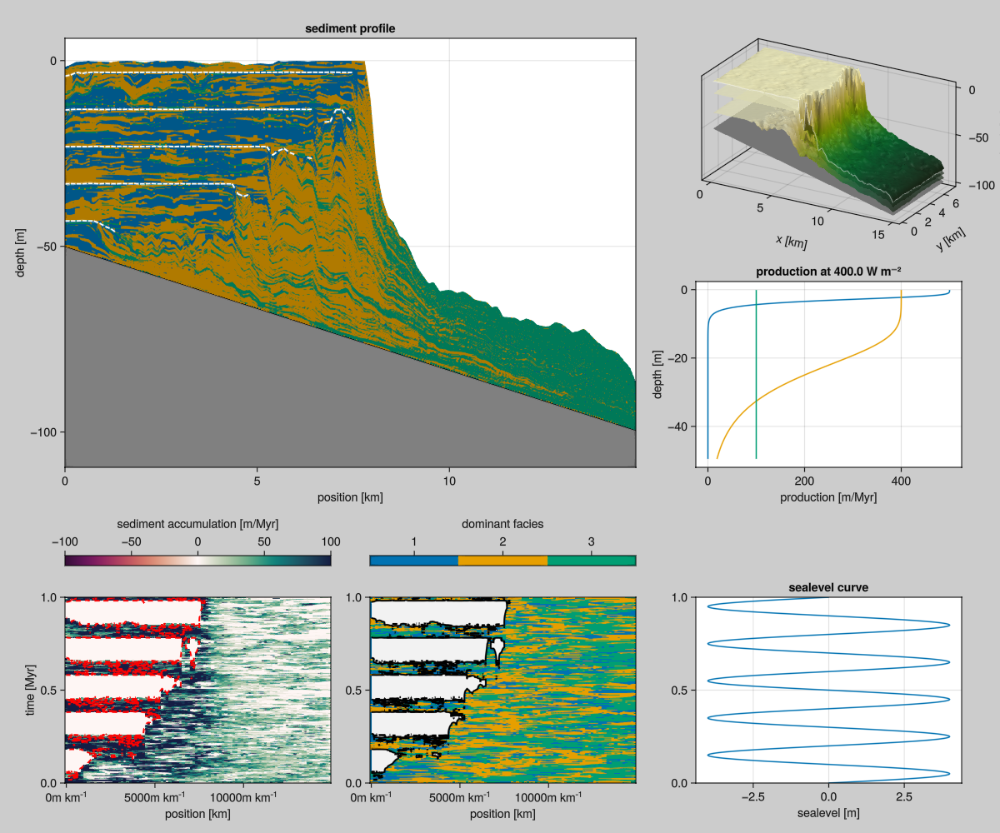

CA with production
This model combines BS92 [1] production with the B13 [2] cellular automaton. This production model is implemented in the CAProduction component. See Cellular Automata for more detail on the automaton.

Complete example
This example is running for 10000 steps to 1 Myr on a 100 $\times$ 50 grid, starting with a sloped height down to 50 m. The sea_level, and initial_depth arguments are functions. The phys_scale argument translate pixels on the grid into physical metres. The write_interval indicates to write output every 10 iterations, summing the production over that range.
#| creates: data/output/cap1.h5
#| requires: src/Models/CAP.jl
module Script
using CarboKitten
const PERIOD = 200.0u"kyr"
const AMPLITUDE = 4.0u"m"
const FACIES = [
CAP.Facies(
viability_range = (4, 10),
activation_range = (6, 10),
production=BenthicProduction(
maximum_growth_rate = 500u"m/Myr",
extinction_coefficient = 0.8u"m^-1",
saturation_intensity = 60u"W/m^2"
)),
CAP.Facies(
viability_range = (4, 10),
activation_range = (6, 10),
production=BenthicProduction(
maximum_growth_rate = 400u"m/Myr",
extinction_coefficient = 0.1u"m^-1",
saturation_intensity = 60u"W/m^2"
)),
CAP.Facies(
viability_range = (4, 10),
activation_range = (6, 10),
production=BenthicProduction(
maximum_growth_rate = 100u"m/Myr",
extinction_coefficient = 0.005u"m^-1",
saturation_intensity = 60u"W/m^2"
))
]
const INPUT = CAP.Input(
tag = "cap1",
box = Box{Coast}(grid_size=(100, 50), phys_scale=150.0u"m"),
time = TimeProperties(
Δt = 200.0u"yr",
steps = 5000),
output = Dict(
:topography => OutputSpec(write_interval = 500),
:profile => OutputSpec(slice = (:, 25))),
sea_level = t -> 4.0u"m" * sin(2π * t / 0.2u"Myr"),
initial_topography = (x, y) -> - x / 300.0,
subsidence_rate = 50.0u"m/Myr",
insolation = 400.0u"W/m^2",
facies = FACIES)
main() = run_model(Model{CAP}, INPUT, "data/output/cap1.h5")
end
Script.main()This writes output to an HDF5 file that you may use for further analysis and visualization.
#| creates: docs/src/_fig/cap1-summary.png
#| requires: data/output/cap1.h5
#| collect: figures
using GLMakie
using CarboKitten.Visualization
GLMakie.activate!()
save("docs/src/_fig/cap1-summary.png", summary_plot("data/output/cap1.h5"))Implementation
module CAP
import ModuleMixins.Procedural: requires
import ..Tag, ..Diagnostics, ..Output, ..CAProduction
using ..Common
using ..FaciesBase: n_facies
import ..CellularAutomaton
using ..CAProduction: production
using ..TimeIntegration
using ..WaterDepth
using ...Output: Frame
# The model composes the records of its components. These are defined in the
# model module itself, so `requires` is defined first, instead of using
# `@component`, which defines it at the end of the module.
requires(::Val{CAP}) = (Tag, Diagnostics, Output, CAProduction)
const Input = record_type(:Input, CAP)
const State = record_type(:State, CAP)
const Facies = record_type(:Facies, CAP)
export Input, Facies
initial_state(input::Input) = Common.initial_state(input)
function initial_frame(input::Input)
return Frame(production=zeros(Sediment,n_facies(input), input.box.grid_size...),
deposition=zeros(Sediment,n_facies(input), input.box.grid_size...))
end
function step!(input::Input)
τ = production(input)
step_ca = CellularAutomaton.step!(input)
subside! = subsider(input)
function (state::State)
if mod(state.step, input.ca_interval) == 0
step_ca(state)
end
prod = τ(state)
Δη = sum(prod; dims=1)[1, :, :]
state.bathymetry .+= Δη
subside!(state)
state.step += 1
return Frame(
production=prod,
deposition=prod)
end
end
endTests
Checks that the CAP model type runs without error and returns a result with the expected dimensions.
module CAPSpec
using Test
using Unitful
using CarboKitten
using CarboKitten.Models: CAP
const FACIES = [
CAP.Facies(
viability_range = (4, 10),
activation_range = (6, 10),
production=BenthicProduction(
maximum_growth_rate = 500u"m/Myr",
extinction_coefficient = 0.8u"m^-1",
saturation_intensity = 60u"W/m^2")
),
CAP.Facies(
viability_range = (4, 10),
activation_range = (6, 10),
production=BenthicProduction(
maximum_growth_rate = 400u"m/Myr",
extinction_coefficient = 0.1u"m^-1",
saturation_intensity = 60u"W/m^2")
),
CAP.Facies(
viability_range = (4, 10),
activation_range = (6, 10),
production=BenthicProduction(
maximum_growth_rate = 100u"m/Myr",
extinction_coefficient = 0.005u"m^-1",
saturation_intensity = 60u"W/m^2")
)]
const INPUT = CAP.Input(
tag = "cap_test",
box = Box{Coast}(grid_size=(1, 1), phys_scale=150.0u"m"),
time = TimeProperties(
Δt = 200.0u"yr",
steps = 10),
output = Dict(
:full => OutputSpec(write_interval = 1)),
initial_topography = (x, y) -> - x / 300.0,
insolation = 400.0u"W/m^2",
facies = FACIES)
const OUT = run_model(Model{CAP}, INPUT, MemoryOutput(INPUT))
@testset "Models/CAP" begin
@test all(size(OUT.data_volumes[:full].bathymetry) .== (1,1,11))
end
end